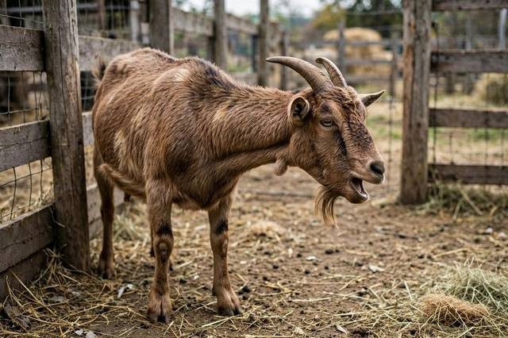
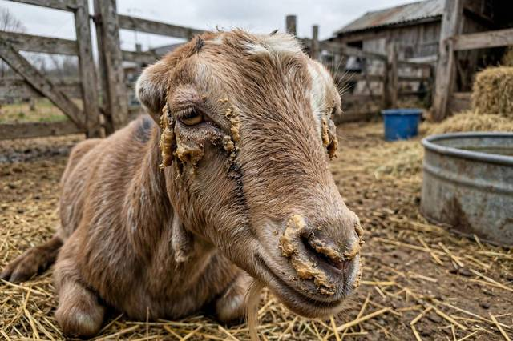
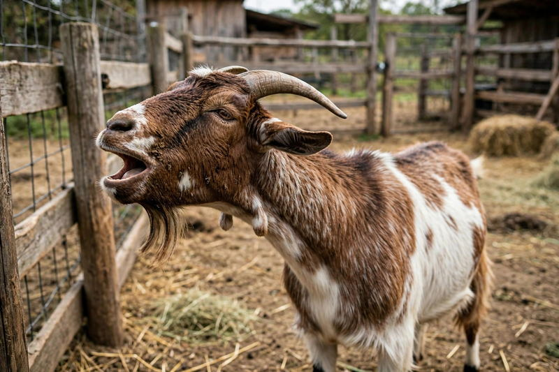

Contagious Caprine Pleuropneumonia (CCPP) in Goats
Global Livestock Health & Veterinary Learning
Goat Health
Veterinary Education
Contagious caprine pleuropneumonia (CCPP) is a severe respiratory disease of goats. It spreads rapidly through a flock, causes high fever and painful breathing, and can kill many animals in a short time.
In Pakistan, CCPP is known as بکریوں کا نمونیا and is an important cause of goat deaths, especially in arid and semi-arid areas. Worldwide, it affects goat populations in Africa, the Middle East and Asia, and it is a WOAH-listed disease.
On this page: the cause, animals affected, clinical signs, diagnosis, treatment principles and prevention.
Cause
CCPP is caused by the bacterium Mycoplasma capricolum subsp. capripneumoniae. It spreads through the air over short distances when infected goats cough, and through close contact. Carrier animals that have recovered can still spread the infection.
Pathogenesis
The CCPP mycoplasma is inhaled and settles in the lower airways and lungs, where it attaches to the lining of the air passages and multiplies. The infection triggers intense inflammation of the lung tissue and of the pleura (the membrane covering the lungs), producing a fibrinous pleuropneumonia — fluid and fibrin collect in the chest, and the lung becomes solid and airless.
Often only one lung is severely affected, which is a characteristic feature of the disease. The damaged lung cannot exchange air properly, so the goat becomes breathless, and toxins released during the infection add to the fever and depression. In flocks that have never been exposed, the disease spreads fast and kills quickly; animals that recover may remain carriers and continue to spread the infection.
Animals Affected
Goats are the main host, and all ages can be affected, though kids and young goats are most vulnerable. Sheep may carry the organism without showing severe disease.
Clinical Signs
1
Sudden high fever(High body temperature, starting suddenly)
2
Severe, painful coughing(Hard, painful cough)
3
Laboured, rapid breathing(Breathing fast, often with the neck stretched forward)
4
Nasal discharge(Sometimes frothy)
5
Loss of appetite(Refusing to eat)
6
Reluctance to move(Standing dull, unwilling to walk)
7
Death within a few days in acute cases(Rapidly fatal in acute cases)
8
Persistent cough(Chronic cases keep coughing)
9
Poor condition(Chronic cases become thin and run down)
Sudden high fever

Severe coughingLaboured breathing

Nasal dischargeLoss of appetiteReluctance to moveDeath within days

Persistent coughPoor condition
Diagnosis
Clinical signs and the rapid spread through a flock raise suspicion. Confirmation is by laboratory tests on nasal swabs or lung samples (culture or PCR) and blood tests. Post-mortem examination typically shows fibrinous pleuropneumonia, often affecting one lung.
Differential Diagnosis
Other respiratory diseases of goats can look similar:
PPR — pneumonia with eye and nasal discharge, mouth sores and diarrhoea; CCPP affects the lungs and pleura without mouth sores or diarrhoea.
Pasteurellosis — sudden pneumonia, often after stress or transport, but without the marked fibrinous pleuritis of CCPP.
Goat pox pneumonia — breathing difficulty with skin nodules over the body.
Lungworm infection — chronic coughing with poor condition, developing slowly rather than as a sudden flock outbreak.
Treatment
Early veterinary treatment with antibiotics effective against mycoplasmas is important, together with supportive nursing care. Always follow the veterinarian’s prescription, dose and withdrawal advice. Severely affected animals may not recover despite treatment.
Important: CCPP spreads fast and kills quickly. Isolate any goat that starts coughing with fever, and call a veterinarian the same day — do not wait to see if it improves.
Recommended Medicines
1
Antibiotic – Tylosin(Effective against the mycoplasma that causes CCPP)10 mg/kg IM daily (goats)
2
Antibiotic – Oxytetracycline(Alternative antibiotic for mycoplasma infection)10–20 mg/kg IM or SC daily (goats)
3
NSAID – Meloxicam(For fever and pain)0.5–1 mg/kg IV/SC once (goats)
4
Fluid therapy – Oral electrolytes / IV fluids(To support hydration during illness)As prescribed by a veterinarian
⚠ Important Tips:
CCPP spreads fast and kills quickly — call a veterinarian the same day a goat starts coughing with fever.
Isolate sick goats at the first sign of coughing.
Use antibiotics only under veterinary advice; follow the dose and withdrawal period.
Vaccinate the flock every year where CCPP occurs.
Injection — vet-administered onlyMedicines — only as prescribed by a veterinarian
Prevention
Vaccinate with CCPP vaccine where available (annual vaccination in endemic areas)
Quarantine new animals for at least two weeks
Isolate sick animals at the first sign of coughing
Avoid mixing flocks at markets and watering points
Cull chronically infected animals where a control programme advises it
Report outbreaks to the veterinary authority
Key Takeaway
CCPP kills quickly, so early recognition, rapid isolation and vaccination are essential. Do not wait for the disease to spread before calling a veterinarian.
Keep herd health records, consult a qualified veterinarian and follow the animal-health authority's current guidance for your region.
References
Standard veterinary references consulted for this guide:
MSD Veterinary Manual
Radostits et al., Veterinary Medicine: A Textbook of the Diseases of Cattle, Horses, Sheep, Pigs and Goats
WOAH Manual of Diagnostic Tests and Vaccines for Terrestrial Animals
FAO animal health manuals
Frequently Asked Questions
What are the symptoms of CCPP in goats?
Sudden high fever, severe painful coughing, and laboured, rapid breathing, often with the neck stretched forward. There may be nasal discharge, loss of appetite and reluctance to move, and death can occur within a few days.
What causes CCPP in goats?
CCPP is caused by the bacterium Mycoplasma capricolum subsp. capripneumoniae. It spreads through the air over short distances when infected goats cough, and through close contact. Carrier animals that have recovered can still spread the infection.
How is CCPP in goats diagnosed?
Clinical signs and rapid spread through a flock raise suspicion. Confirmation is by laboratory tests on nasal swabs or lung samples (culture or PCR) and blood tests.
How is CCPP in goats treated?
Early veterinary treatment with antibiotics effective against mycoplasmas is important, together with supportive nursing care. Always follow the veterinarian's prescription, dose and withdrawal advice. Severely affected animals may not recover despite treatment.
How can CCPP in goats be prevented?
Vaccinate with CCPP vaccine where available, with annual vaccination in endemic areas. Quarantine new animals for at least two weeks, isolate sick animals at the first sign of coughing, and avoid mixing flocks at markets and watering points.
How to treat CCPP in goats?
Early veterinary treatment with antibiotics effective against mycoplasmas is important, together with supportive nursing care. Always follow the veterinarian's prescription, dose and withdrawal advice.
Why is my goat coughing and breathing fast?
Severe painful coughing with laboured, rapid breathing and sudden high fever are typical of CCPP in goats. Isolate the goat at the first sign of coughing and call a veterinarian the same day.
بکری کو نمونیا (CCPP) ہو جائے تو کیا کریں؟
اچانک تیز بخار، شدید کھانسی اور سانس لینے میں مشکل سی سی پی پی کی علامات ہیں۔ بیمار بکری کو فوراً الگ کریں اور اسی دن ویٹرنری ڈاکٹر کو بلائیں، کیونکہ یہ بیماری بہت تیزی سے پھیلتی اور جان لیوا ہو سکتی ہے۔
✍️ Written by Dr. Shahid Bilal Depal, DVM (PVMC RVMP #15068)
This guide is for educational purposes. Consult a registered veterinarian for diagnosis and treatment.